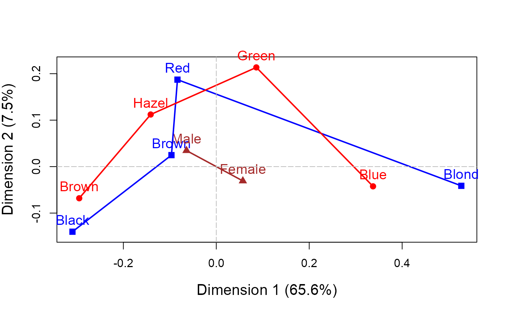
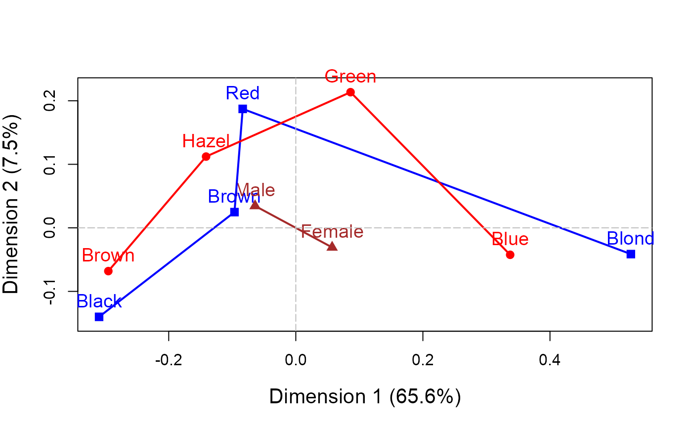

This function is intended as an alternative to plot.mjca
for plotting multiple correspondence analysis solutions. It provides more
flexibility for labeling factor levels and connecting them with lines. It
does not support some features of plot.mjca (centroids, supplementary
points, arrows, etc.)
Arguments
- obj
An
"mjca"object- map
Character string specifying the map type, i.e., the scaling applied to coordinates for different types of MCA representations. Allowed options include:
"symmetric"(default),"rowprincipal","colprincipal","symbiplot","rowgab","colgab","rowgreen","colgreen". Seemjcafor details.- dim
Dimensions to plot, an integer vector of length 2
- col
Vector of colors, one for each factor in the MCA
- pch
Vector of point symbols for the category levels, one for each factor
- cex
Character size for points and level labels
- pos
Position of level labels relative to the category points; either a single number or a vector of length equal to the number of category points.
- lines
A logical or an integer vector indicating which factors are to be joined with lines using
multilines- lwd
Line width(s) for the lines
- legend
Logical; draw a legend for the factor names?
- legend.pos
Position of the legend in the plot, as in
legend- xlab, ylab
Labels for horizontal and vertical axes. The default,
"_auto_"means that the function auto-generates a label of the form"Dimension X (xx.x \%)"- rev.axes
A logical vector of length 2, where TRUE reverses the direction of the corresponding axis
- ...
Arguments passed down to
plot
See also
mjca, plot.mjca
cacoord returns CA and MCA coordinates,
multilines draw multiple lines according to a factor,
Examples
require(ca)
data(Titanic)
titanic.mca <- mjca(Titanic)
#> Warning: 'as.is' should be specified by the caller; using TRUE
#> Warning: 'as.is' should be specified by the caller; using TRUE
#> Warning: 'as.is' should be specified by the caller; using TRUE
#> Warning: 'as.is' should be specified by the caller; using TRUE
mcaplot(titanic.mca, legend=TRUE, legend.pos="topleft")
 data(HairEyeColor)
haireye.mca <- mjca(HairEyeColor)
#> Warning: 'as.is' should be specified by the caller; using TRUE
#> Warning: 'as.is' should be specified by the caller; using TRUE
#> Warning: 'as.is' should be specified by the caller; using TRUE
mcaplot(haireye.mca, legend=TRUE, cex.lab=1.3)

data(HairEyeColor)
haireye.mca <- mjca(HairEyeColor)
#> Warning: 'as.is' should be specified by the caller; using TRUE
#> Warning: 'as.is' should be specified by the caller; using TRUE
#> Warning: 'as.is' should be specified by the caller; using TRUE
mcaplot(haireye.mca, legend=TRUE, cex.lab=1.3)
